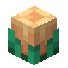

火把花蜡烛
Torchflower Candle
英文名: Torchflower Candle命名空间 ID:
bountifulfares:torchflower_candle类型: 方块所属模组: Bountiful Fares资料检索: MC百科检索「火把花蜡烛」所属标签
合成获得 (1)
有序合成Bountiful Fares


原始 JSON
{
"type": "minecraft:crafting_shaped",
"category": "misc",
"key": {
"#": {
"item": "minecraft:torchflower"
},
"H": {
"item": "minecraft:honeycomb"
},
"S": {
"item": "minecraft:string"
}
},
"pattern": [
"S",
"H",
"#"
],
"result": {
"count": 1,
"id": "bountifulfares:torchflower_candle"
}
}用于合成 (1)
有序合成The Block Box

原始 JSON
{
"type": "minecraft:crafting_shaped",
"category": "misc",
"key": {
"/": {
"item": "minecraft:string"
},
"c": {
"tag": "minecraft:candles"
},
"p": {
"item": "minecraft:paper"
}
},
"pattern": [
"ppp",
"p p",
"/c/"
],
"result": {
"count": 1,
"id": "blockbox:white_sky_lantern"
}
}